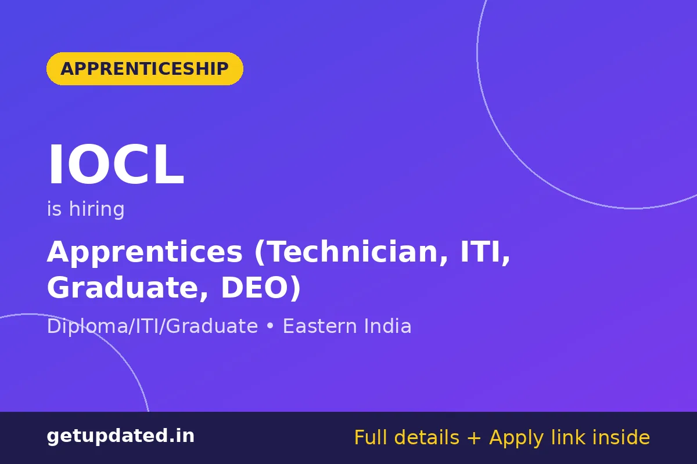

Delta Technology Hub (DTH), the Bengaluru technology centre of Delta Air Lines, is hiring an Associate Software Developer for its Enterprise Payments team. The role suits early-career engineers, and the posting accepts 0-2 years of experience, including internships and academic projects.
You would build secure and scalable payment services that support Delta's digital commerce. The work centres on Java, Spring Boot, REST APIs and AWS, alongside experienced engineers who review your code and guide your growth.
The posting says it was published about a day before this article was prepared, and it does not give a closing date. Applications go through LinkedIn Easy Apply, so apply early if the profile fits.
Table of Contents
- Quick Highlights
- About Delta Air Lines and Delta Technology Hub
- Role Overview
- Key Responsibilities
- Eligibility
- Skills That Will Make Your Application Stand Out
- Salary and Benefits
- Selection Process
- How to Apply
- Preparation Plan and Interview Topics
- Common Mistakes to Avoid
- Official Links and Final Checklist
- Final Takeaway
- Also Read
- FAQs
Quick Highlights
| Particular | Details |
|---|---|
| Company | Delta Technology Hub (Delta Air Lines), Bengaluru |
| Role | Associate Software Developer |
| Team | Enterprise Payments |
| Experience | 0-2 years (internships and academic projects count) |
| Qualification | Bachelor's or Master's in Computer Science, IT or related field |
| Location | Bengaluru, Karnataka, India |
| Core skills | Java, Spring Boot, REST APIs, microservices, AWS basics |
| Salary | Not disclosed |
| Last date | Not disclosed |
| How to apply | LinkedIn Easy Apply |
Apply early
No closing date is given in the posting. LinkedIn listings can close without notice once enough applications arrive, so do not wait.
About Delta Air Lines and Delta Technology Hub
Delta Air Lines began in 1924 as a crop-dusting operation called Huff Daland Dusters. Headquartered in Atlanta, Georgia, it is now a global airline known for safety, reliability and customer service. According to the posting, Delta was named to Glassdoor's 2026 Top 100 Best Places to Work list and ranked 11th on Fortune's World's Most Admired Companies list.
The Delta Technology Hub in Bangalore is Delta's investment in technology and business capabilities in India. It supports how Delta runs its operations and serves travellers, using technology-led transformation. The posting says the organisation is certified by the Great Place to Work Institute (India).
For a fresher, an airline technology centre offers real production systems at scale: payments, bookings and customer-facing applications that must run reliably around the clock.
Role Overview
As an Associate Software Development Engineer in the Enterprise Payments team, you will help build payment solutions behind Delta's digital commerce ecosystem. The posting describes the work as developing backend services, APIs and cloud-based applications.
You will work alongside experienced engineers and learn software engineering, security and cloud practices on the job. The posting calls the role ideal for early-career engineers who are passionate about software development and keen to solve real business problems at scale.
Payments work puts a premium on correctness, security and reliability. A bug in a payments service can affect real customers, so expect a strong emphasis on testing, code review and careful deployment.

Key Responsibilities
The posting lists these day-to-day responsibilities:
- Develop and maintain backend applications using Java and Spring Boot.
- Build and consume REST APIs and support microservices-based applications.
- Assist in developing and deploying applications on AWS Cloud.
- Collaborate with product owners, architects and senior engineers to deliver business solutions.
- Participate in code reviews and use the feedback to improve code quality.
- Troubleshoot application issues and support production environments.
- Contribute to CI/CD pipelines and Agile development practices.
- Write unit tests and ensure code meets quality and security standards.
- Keep learning and applying new technologies and engineering best practices.
Production support is part of the job. Early on, this is where you learn how real systems behave, and logs, monitoring and debugging become daily habits.
Eligibility
Check each point against your profile before applying:
- Bachelor's or Master's degree in Computer Science, Information Technology or a related field.
- 0-2 years of software development experience. Internships, academic projects and full-time experience all count.
- Knowledge of Java fundamentals and object-oriented design.
- Understanding of Spring Boot, REST APIs and basic microservices concepts.
- Familiarity with a relational database such as Oracle, MySQL or PostgreSQL.
- Exposure to Git or similar source control.
- Basic cloud understanding; AWS exposure is a plus.
- Understanding of data structures, algorithms and software engineering fundamentals.
- Strong analytical, problem-solving and communication skills, and the ability to learn quickly in a team.
The posting does not state a passout year or a minimum percentage. If you are unsure whether your branch counts as "related", a degree with strong programming content (for example ECE or EEE with solid Java projects) is worth trying, but the posting names Computer Science and IT first.
Skills That Will Make Your Application Stand Out
The qualification list also includes newer, AI-related skills. The posting mentions demonstrated experience with AWS AI/ML services such as Amazon SageMaker, Amazon Bedrock and AgentCore, through academic projects, internships, hackathons or work. It also asks for experience with AI-assisted development tools such as GitHub Copilot, Claude or Kiro, used for generating and reviewing code, writing test cases, documentation and troubleshooting, with sound judgment in validating the output.
It also mentions an understanding of prompt engineering, AI-assisted development workflows, Retrieval-Augmented Generation (RAG) concepts and model integration patterns.
Under preferred qualifications, the posting lists:
- Internship or project experience in Java-based application development.
- AWS services such as EC2, Lambda, API Gateway or S3.
- React, Angular, JavaScript, HTML or CSS.
- CI/CD tools such as GitHub Actions, Jenkins or Azure DevOps.
- Agile and DevOps understanding.
- Exposure to payment systems, e-commerce or financial applications.
You do not need everything
Few freshers will tick every box. Be strong on Java, Spring Boot, REST and SQL first, then add one small AWS or AI-assisted project to show initiative.
Salary and Benefits
The posting does not disclose salary, stipend or benefits. We are not stating any figure here. Check compensation details when a recruiter contacts you, and compare them against your expectations before accepting an offer.
LinkedIn labels the employment type on this listing as "Volunteer", which looks like a listing-category quirk rather than the actual nature of the role. The responsibilities describe a regular software engineering position. Confirm the employment terms with the recruiter during the process.
Selection Process
The posting does not describe the hiring stages. Technology hubs of this kind commonly use an application screen, one or more technical interviews and an HR discussion, but this is general expectation and not confirmed for this role.
Prepare for your resume being checked against the listed skills first. Technical rounds would likely probe Java, Spring Boot, APIs, databases and problem solving, given how the posting is written.

How to Apply
- Open the employer's LinkedIn posting from the Official Links section below.
- Log in to your LinkedIn account and make sure your profile is complete and current.
- Click Easy Apply and fill in the form carefully.
- Upload a one-page resume that highlights Java, Spring Boot, REST API, SQL, Git and any AWS work.
- Add links to your GitHub projects where the form allows.
- Review all answers and submit. Keep a screenshot or note of the application.
Tailor your resume headline to the role, for example "Java Spring Boot developer | REST APIs | AWS". Recruiters search by keywords, and matching the posting's wording helps your application surface.
Preparation Plan and Interview Topics
A focused two to three week plan is enough to refresh the essentials.
Week 1: Core Java and data structures
- Revise OOP concepts: inheritance, polymorphism, abstraction, encapsulation, interfaces.
- Practise collections (HashMap, ArrayList, Set), strings, exceptions and basic multithreading.
- Solve array, string, linked list and hashing problems daily.
Week 2: Spring Boot, REST and databases
- Understand dependency injection, controllers, services, repositories and the Spring Boot project structure.
- Know HTTP methods, status codes, JSON and how to design a clean REST endpoint.
- Revise SQL joins, indexes, group by and basic normalisation.
- Be able to explain microservices at a basic level: independent services, API communication and why teams use them.
Week 3: Cloud, testing and projects
- Learn what AWS EC2, S3, Lambda and API Gateway do.
- Write unit tests with JUnit and Mockito for a small service.
- Practise explaining one project end to end: the problem, your design, challenges and results.
- Try an AI-assisted workflow, such as using a coding assistant to draft tests, and be ready to explain how you verified its output.
Likely interview topics include Java fundamentals, Spring Boot basics, REST design, SQL queries, Git, Agile, basic payments concepts such as secure handling of sensitive data, and your project walkthrough.
Common Mistakes to Avoid
- Generic resumes. Name the specific tools from the posting that you have actually used.
- Listing skills you cannot explain. Interviewers often pick a line from your resume and go deep.
- Ignoring fundamentals. Strong DSA and Java basics matter more than buzzwords.
- Claiming AI tool expertise without examples. Describe one concrete way you used an AI tool and how you checked its output.
- Applying late. Easy Apply listings can attract many applicants quickly.
- Incomplete LinkedIn profile. Recruiters often view it alongside your application.
Official Links and Final Checklist
- Delta Technology Hub: Associate Software Developer (employer's LinkedIn posting, Easy Apply)
- Delta Air Lines official website
Before you apply, confirm each of these:
- Degree in Computer Science, IT or a related field.
- Java, Spring Boot, REST, SQL and Git covered in your resume.
- At least one project you can explain in detail.
- LinkedIn profile and resume updated and consistent.
- Application submitted and noted.
Final Takeaway
This is a good entry point into a respected airline technology centre for freshers and early-career developers who know Java and Spring Boot.
The posting welcomes 0-2 years of experience, counts academic projects and offers real exposure to payments, microservices and AWS. Salary and the last date are not disclosed, so apply early through the official LinkedIn posting and prepare your Java fundamentals and project stories well.
Also Read

ECIL Recruitment 2026: Apply Online for 242 Graduate Engineer and Technician Apprentice Posts
Read now →
Superfone Hiring Technical Support Trainee in Bengaluru: Freshers Can Apply (2026)
Read now →
Accenture Hiring Application Tech Support Practitioner in Bengaluru (0-2 Years, Freshers Can Apply)
Read now →
IOCL Eastern Region Apprentice Recruitment 2026: 409 Seats for Diploma, ITI, Graduate and DEO
Read now →Browse all latest jobs & updates →
FAQs
1. Who can apply for the Delta Technology Hub Associate Software Developer role?
Candidates with a Bachelor's or Master's degree in Computer Science, Information Technology or a related field and 0-2 years of software development experience. Internships and academic projects count as experience.
2. Is this job open to freshers?
Yes. The posting accepts 0-2 years of experience and explicitly counts internships and academic projects, so freshers with good project work can apply.
3. Where is the job located?
The job is based in Bengaluru, Karnataka, with Delta Technology Hub, Delta Air Lines' technology centre in India.
4. Which skills are required?
Java fundamentals, object-oriented design, Spring Boot, REST APIs, basic microservices, a relational database such as Oracle, MySQL or PostgreSQL, Git, and data structures and algorithms. Basic AWS knowledge is a plus.
5. How do I apply?
Use LinkedIn Easy Apply on the employer's official LinkedIn posting, linked in the Official Links section of this article.
6. What is the last date to apply?
The posting does not disclose a last date. It was listed about a day before this article was prepared, so apply early.
7. Is the salary mentioned?
No. The posting does not disclose salary or benefits, so check details during the recruitment process.
8. Do I need experience with AI tools?
The posting lists experience with AWS AI/ML services and AI-assisted tools such as GitHub Copilot, Claude or Kiro among the qualifications. Showing even project-level exposure will strengthen your application.